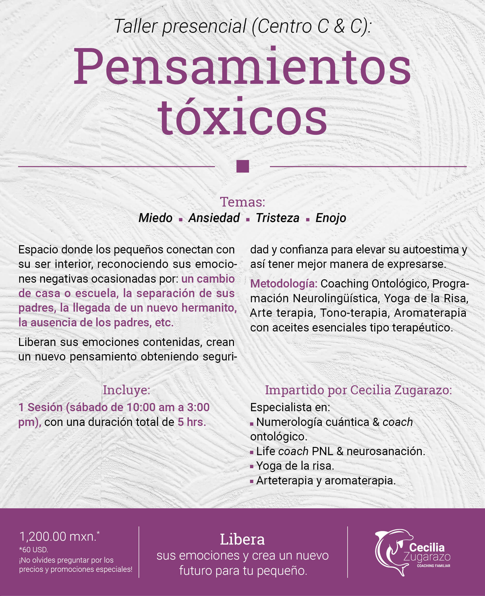
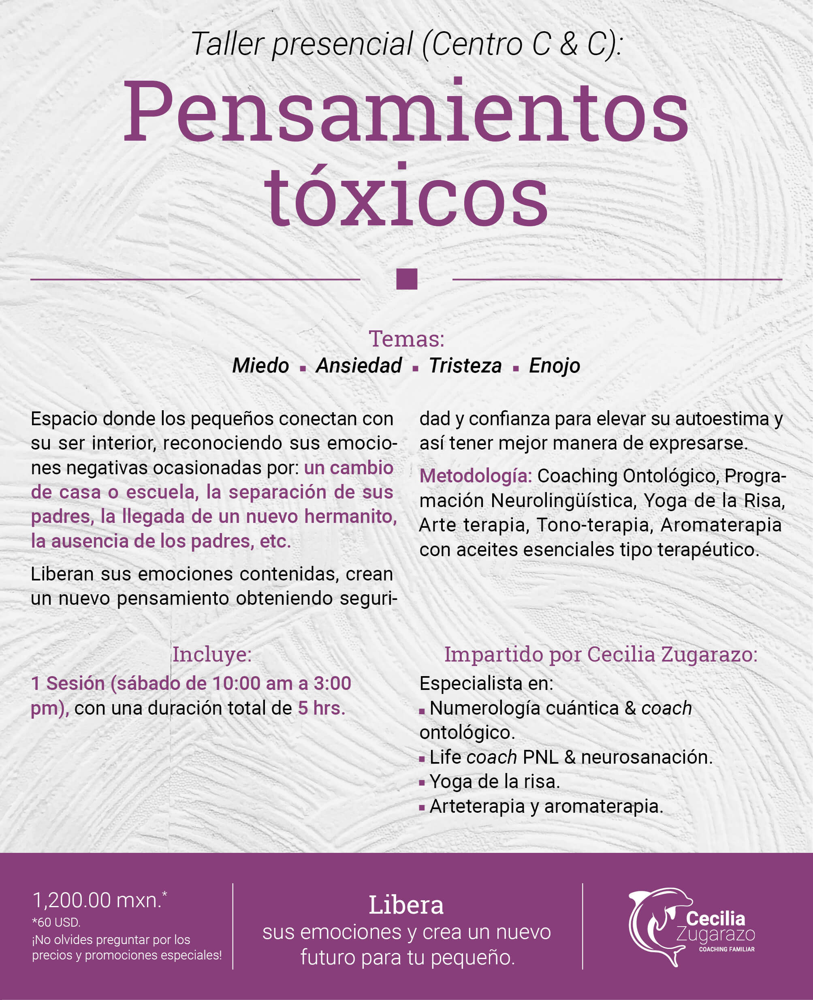
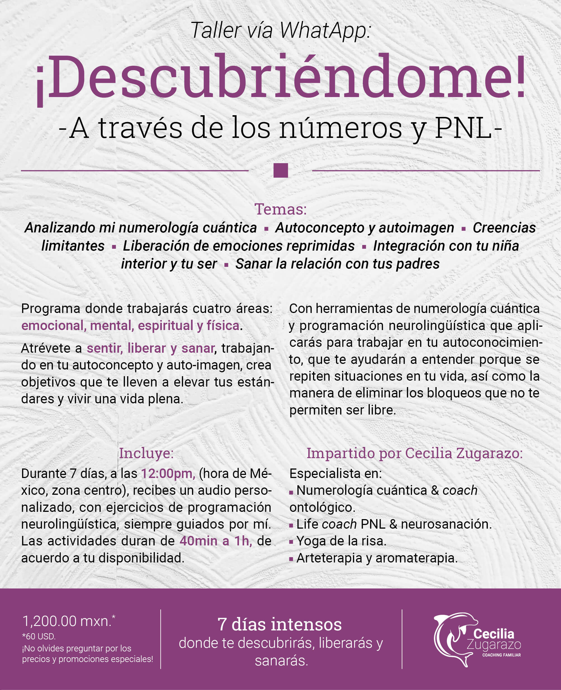
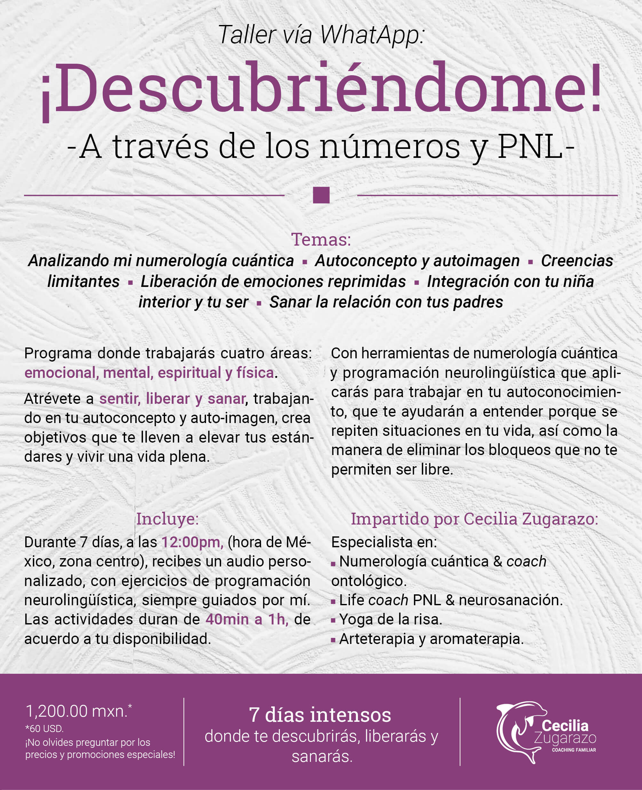
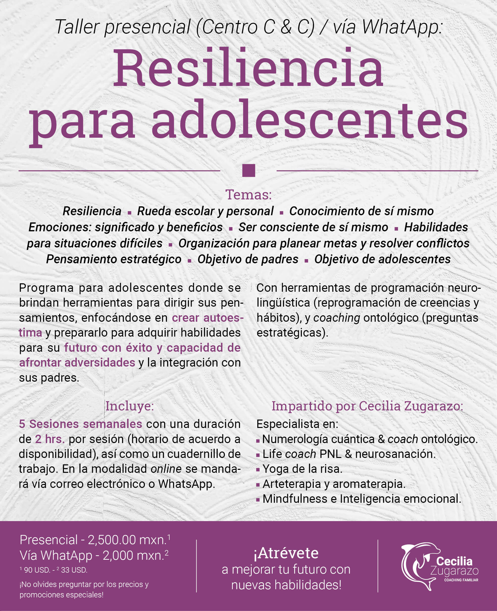
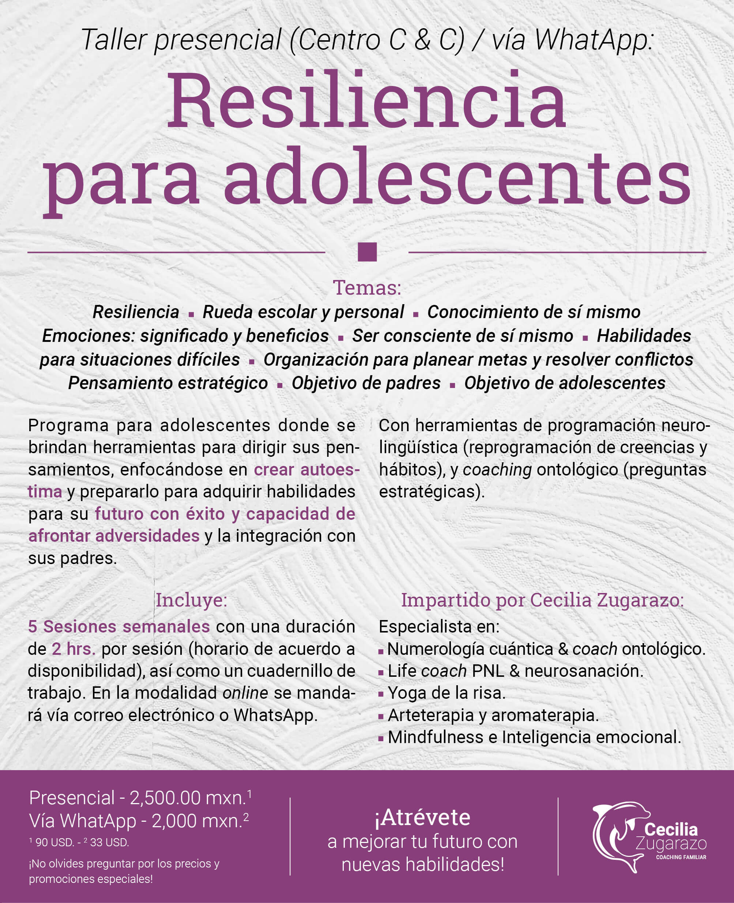

¿Qué tal?
Mi nombre es Cecilia Zugarazo, Coach de Vida (Life Coach).
Soy una mujer apasionada del crecimiento humano, lo cual me ha llevado a descubrirme y ser coherente con mis
sueños, metas y objetivos. Esta decisión y forma de vivir me permite que, mientras aprendo y disfruto del
proceso de mi despertar, pueda acompañar a las personas en el camino de su descubrimiento y de lo que
realmente son.
Desde hace más de 4 años, me dedico a impartir talleres para niños, adolescentes y adultos que apuntan siempre al
crecimiento personal, familiar y de cualquier entorno en el que se desarrollen.
Trabajamos con el pensamiento estratégico para tener una toma de decisiones asertiva frente a las diferentes
situaciones de vida, así como también, a reencontrarnos con nuestros talentos y liberar las emociones que
están atrapadas en nuestro cuerpo y que han ocasionado bloqueos mentales para vivir una vida plena.
Estoy certificada por la IAC en Coaching Ontológico, Life Coach & PNL, Coach
Transgeneracional, Coach para niños, Coach para adolescentes, Diplomado en Numerología
Cuántica y Diplomado Arteterapia.


 



 



 
